18 October 2026 · Visible browser on parallel stack 4291 · Fresh project and notebook · Real Kimi K3 generation
The test began on Home by pasting a note about database transactions, choosing New project, and saving it. No pre-existing project content was used.
1. Research becomes a document
Fixed: a notebook pane could hide the document created by a note-based question. Accepted document requests now open the document and collapse chat when they contain a selected passage.
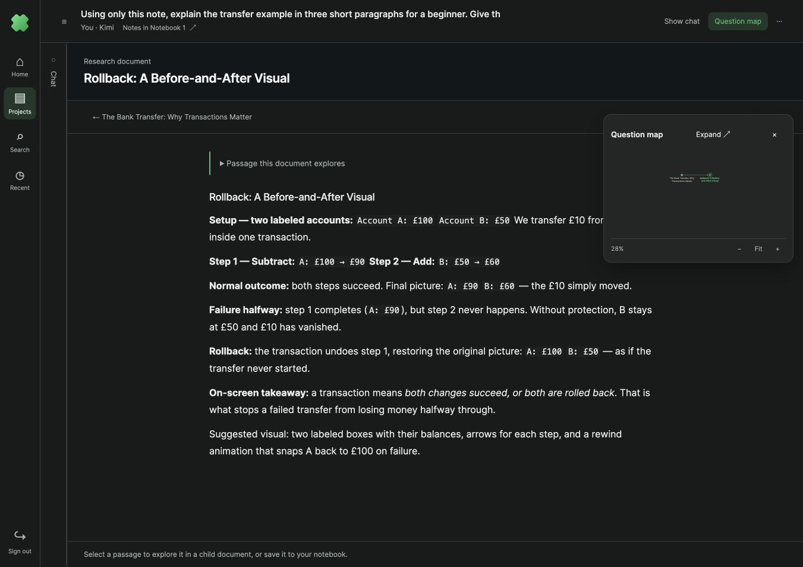
Primary research documentConnected question mapTwo real answers: a root document and a child created from a selected passage. Map tested at floating, half-screen, and full-screen sizes; selecting a node returns to its document.
2. Keep an excerpt in a notebook
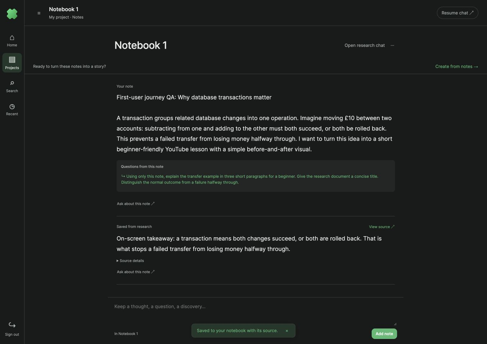
Clear next step: create from notesThe notebook holds the original note plus the selected research takeaway. The saved excerpt retains its source and a route back to research.
3. Return to the ongoing conversation
Fixed: Resume chat used to preserve the collapsed-chat state. It now restores the conversation alongside the active document.
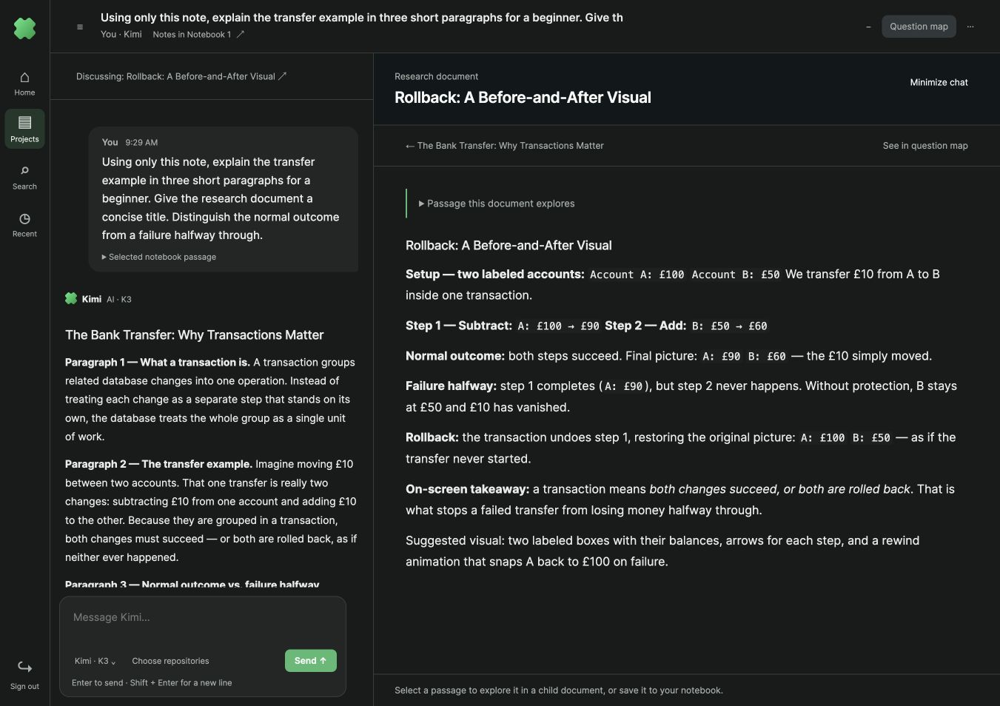
Persistent conversationSame document contextChat and document remain connected when returning from content creation.
4. Understand what gets created
Simplified: Open research chat replaces Chat beside notes. Note-based chat explains the attached passage. Create story draft replaces the unexplained Create wireframes action; the screen explains wireframes and the path to video.
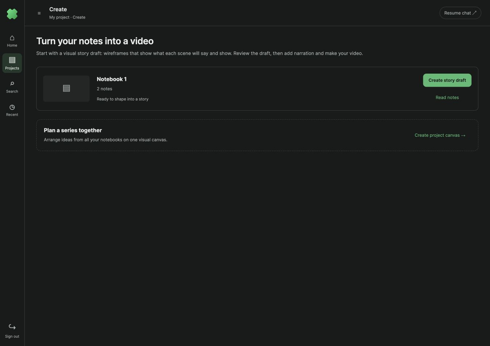
Explains the output before generationThe creation screen starts with a visual story draft and explains the review and video steps.
5. Session recovery found during testing
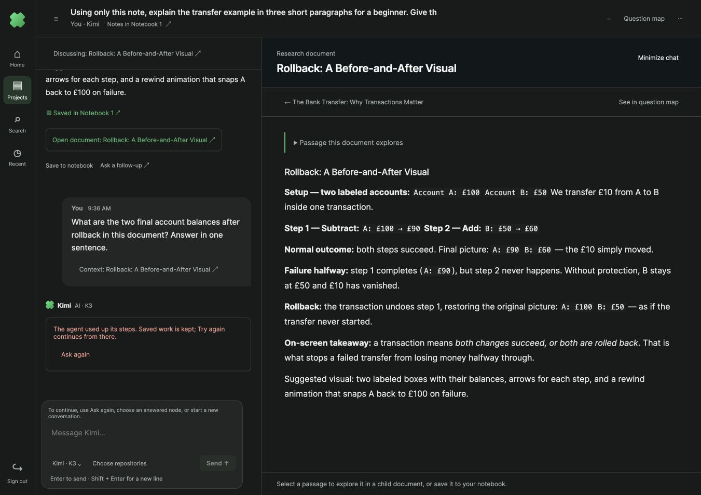
Issue found with real Kimi follow-upReplayed native-session tool calls consumed the next turn’s budget. A separate recovery issue left Send disabled after Ask again. Fixed: replayed events are ignored until a new prompt starts. Ask again now restores an enabled composer, preserves its context in the URL, and focuses the question. A real follow-up then completed using the same native Kimi session (8 new tool calls), correctly recalling the combined £150 balance.
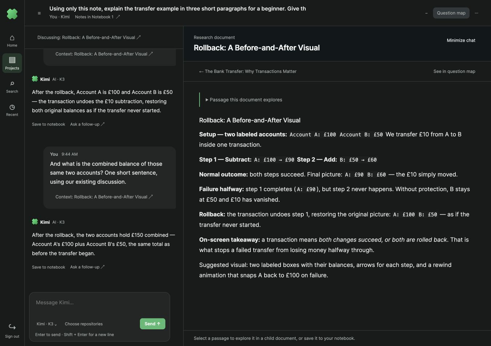
Real resumed Kimi sessionOrdinary follow-ups stay in the chat. The question map still contains only the two research documents.
6. A complete story draft
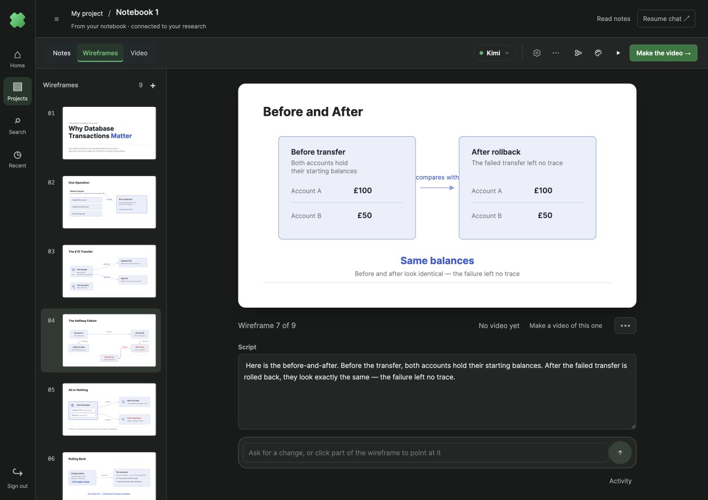
Ready for videoKimi generated nine visual wireframes and narration scripts from the original note and saved research excerpt. Scene selection and rehearsal were tested in the visible browser.
7. Simpler video setup
Optional production choices and individual scene selection are collapsed. Single-scene creation keeps its selected scene visible. Fixed a duration-slider bug: without an optional callback, the slider previously changed only its handles. It now updates its label, word estimate, accessibility text, and submitted duration together.
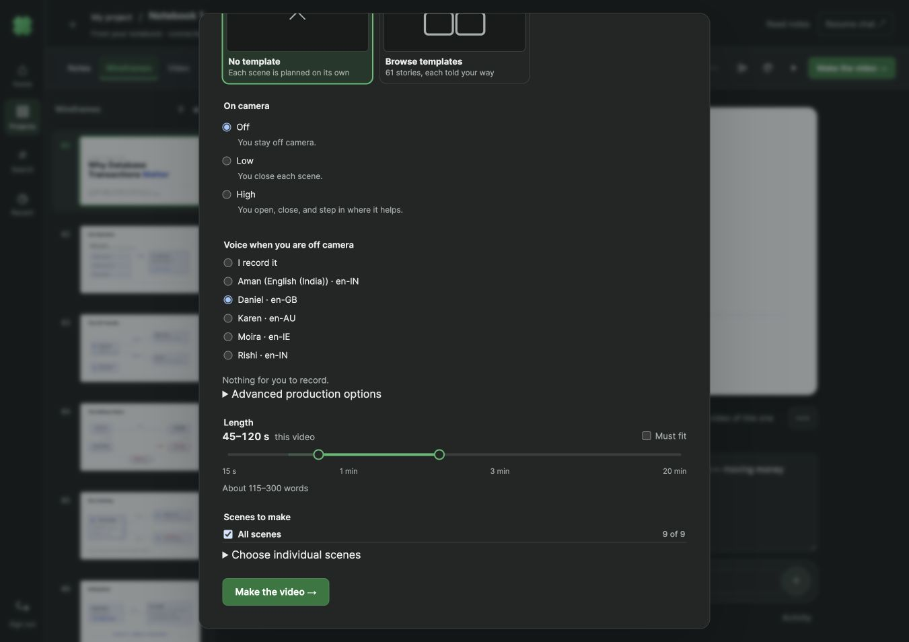
Optional controls stay foldedVoice and length remain direct choices. The final short-clip test uses one scene, off-camera narration, the Daniel system voice, and a 15–30 second target.
8. Video plan approved
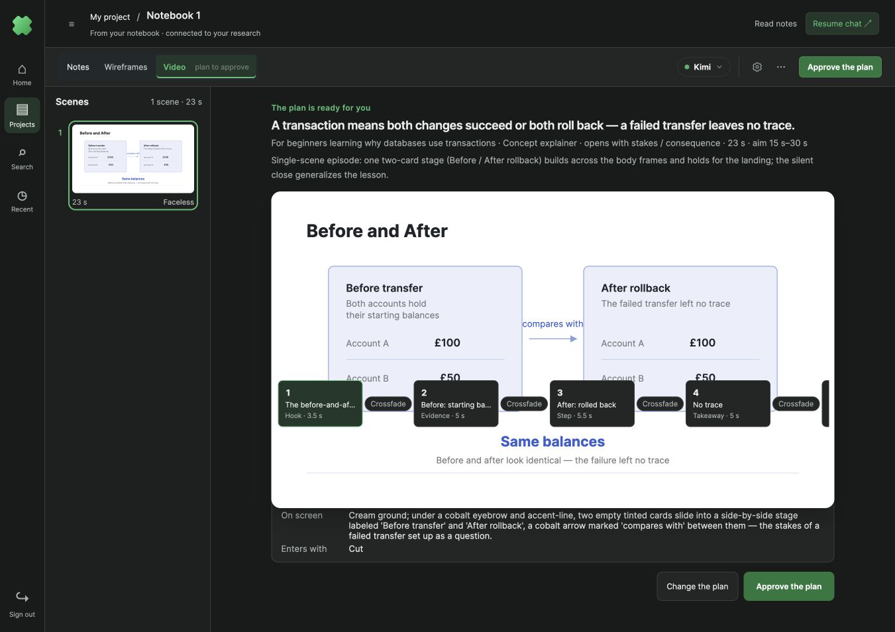
One clear next actionThe real Kimi plan is 23 seconds across five frames, within the selected 15–30 second target. The test approved this plan through the visible UI.
9. Keep the preview unobstructed
Fixed during real frame generation: the project shell forced a fixed height on the storyboard grid, squeezing its rows until the frame strip overlapped the preview. Storyboard stages now size to their content, with controls below the image and reachable by scrolling.
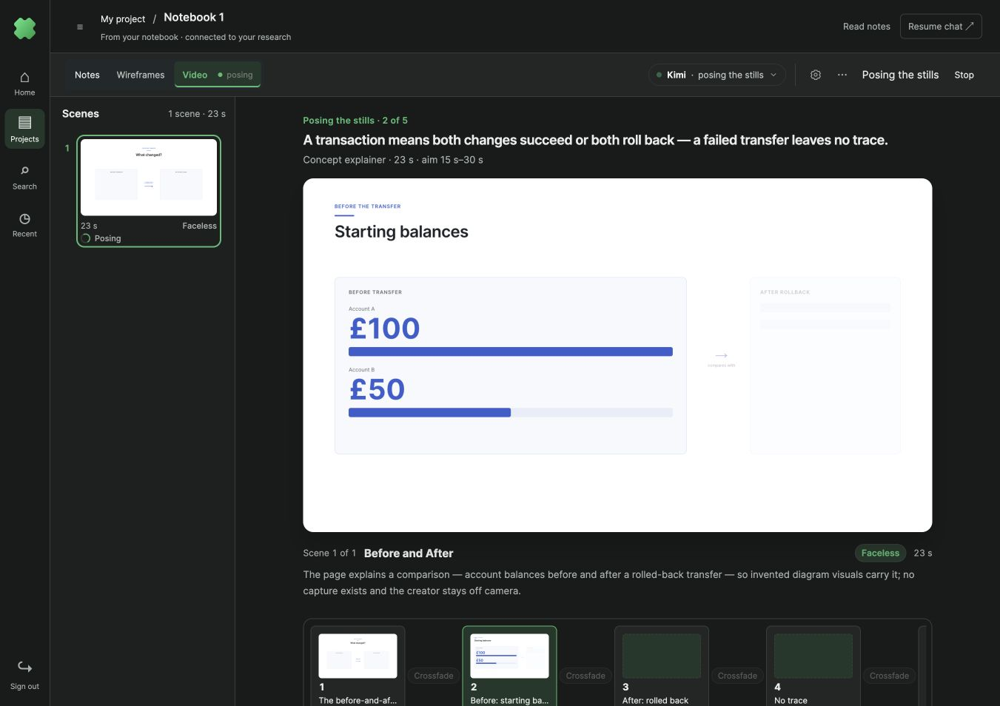
Full preview, controls belowBrowser geometry verified the preview ending at y=719 and the strip beginning at y=836, with no overlap.
10. Return home without losing work
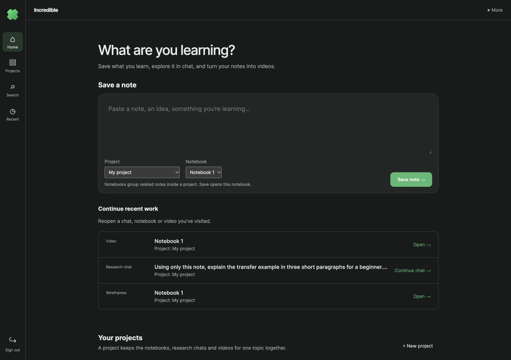
Reopen the running videoThe test returned Home during frame generation and reopened the video from Continue recent work. Generation continued and the same job was restored.
11. A playable video
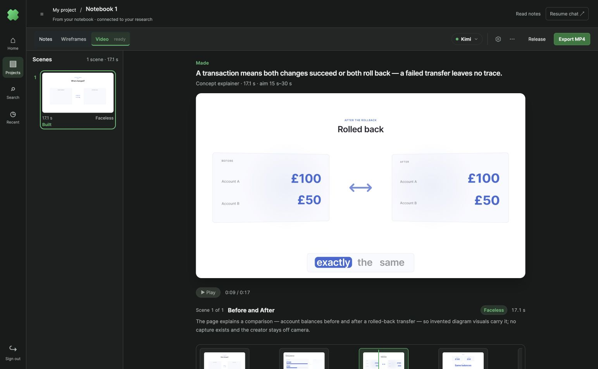
Video ready · Export MP4Playback verifiedThe five-frame clip finished at 17.1 seconds after narration timing, within the selected 15–30 second range. Playback reached the end in the visible browser (currentTime = duration = 17.1, ended = true), with a fully buffered video and no media error. The screenshot shows the rollback comparison at nine seconds. This is one completed scene from the nine-scene story draft; the entire nine-scene episode was not rendered or published.
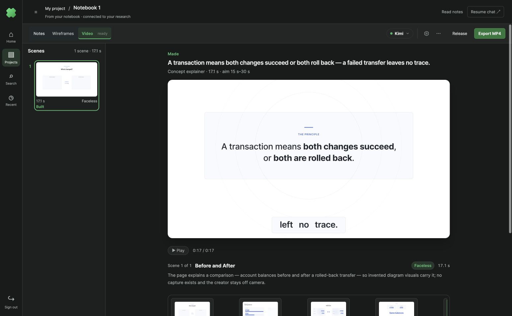
Playback completed through the final takeaway.
Regression checks
238 test files / 1,565 tests passed. Production build, formatting of changed files, source-size limits, and diff whitespace checks passed. Protocol fixture tests cover historical ACP replay; the real Kimi retest separately proves native session continuity. No storage schema changed.